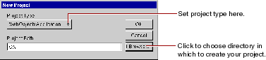
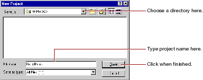
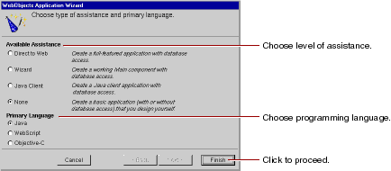

Table of Contents
Table of Contents  Previous Section
Previous Section
On Mac OS X Server, choose Project Builder from the Apple menu under Developer Applications. On Windows NT, you can launch Project Builder from the WebObjects program group in the Start menu.


The New Project panel shows the path you specified.
The WebObjects Application Wizard starts.

If you are developing an application that accesses a database, you may wish to use one of the levels of assistance that WebObjects provides. For more information on these options, see Creating a WebObjects Database Application.
 Next Section
Next Section